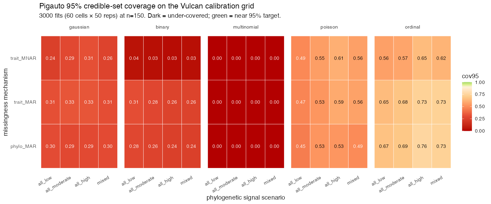

Vulcan calibration grid — pigauto 95% coverage
60 cells × 50 reps = 2758 fits at n=150 species. Coverage is MC-dropout credible-set coverage (target 0.95). The grid was run on PAICE Vulcan (aip-snakagaw) via submit_v090_vulcan/.
Coverage heatmap

Per-trait-type summary
| trait_type | mean | median | sd | q025 | q975 | n_fits |
|---|
| gaussian | 0.295 | 0.300 | 0.080 | 0.122 | 0.426 | 542 |
| binary | 0.192 | 0.208 | 0.138 | 0.000 | 0.470 | 585 |
| multinomial | 0.000 | 0.000 | 0.000 | 0.000 | 0.000 | 554 |
| poisson | 0.522 | 0.500 | 0.156 | 0.264 | 0.878 | 477 |
| ordinal | 0.669 | 0.674 | 0.124 | 0.423 | 0.917 | 600 |
Per-cell coverage
| scenario | mechanism | trait_type | mean_cov | sd_cov | n_reps |
|---|
| all_low | phylo_MAR | gaussian | 0.303 | 0.066 | 50 |
| all_moderate | phylo_MAR | gaussian | 0.289 | 0.087 | 50 |
| all_high | phylo_MAR | gaussian | 0.293 | 0.083 | 50 |
| mixed | phylo_MAR | gaussian | 0.298 | 0.082 | 50 |
| all_low | trait_MAR | gaussian | 0.312 | 0.070 | 21 |
| all_moderate | trait_MAR | gaussian | 0.329 | 0.077 | 21 |
| all_high | trait_MAR | gaussian | 0.329 | 0.070 | 50 |
| mixed | trait_MAR | gaussian | 0.307 | 0.076 | 50 |
| all_low | trait_MNAR | gaussian | 0.242 | 0.079 | 50 |
| all_moderate | trait_MNAR | gaussian | 0.289 | 0.082 | 50 |
| all_high | trait_MNAR | gaussian | 0.313 | 0.073 | 50 |
| mixed | trait_MNAR | gaussian | 0.260 | 0.075 | 50 |
| all_low | phylo_MAR | binary | 0.281 | 0.104 | 50 |
| all_moderate | phylo_MAR | binary | 0.261 | 0.088 | 50 |
| all_high | phylo_MAR | binary | 0.244 | 0.104 | 50 |
| mixed | phylo_MAR | binary | 0.243 | 0.099 | 50 |
| all_low | trait_MAR | binary | 0.308 | 0.102 | 50 |
| all_moderate | trait_MAR | binary | 0.280 | 0.104 | 50 |
| all_high | trait_MAR | binary | 0.258 | 0.091 | 50 |
| mixed | trait_MAR | binary | 0.258 | 0.098 | 50 |
| all_low | trait_MNAR | binary | 0.044 | 0.035 | 35 |
| all_moderate | trait_MNAR | binary | 0.031 | 0.028 | 50 |
| all_high | trait_MNAR | binary | 0.025 | 0.030 | 50 |
| mixed | trait_MNAR | binary | 0.031 | 0.027 | 50 |
| all_low | phylo_MAR | multinomial | 0.000 | 0.000 | 50 |
| all_moderate | phylo_MAR | multinomial | 0.000 | 0.000 | 50 |
| all_high | phylo_MAR | multinomial | 0.000 | 0.000 | 34 |
| mixed | phylo_MAR | multinomial | 0.000 | 0.000 | 50 |
| all_low | trait_MAR | multinomial | 0.000 | 0.000 | 50 |
| all_moderate | trait_MAR | multinomial | 0.000 | 0.000 | 50 |
| all_high | trait_MAR | multinomial | 0.000 | 0.000 | 33 |
| mixed | trait_MAR | multinomial | 0.000 | 0.000 | 50 |
| all_low | trait_MNAR | multinomial | 0.000 | 0.000 | 50 |
| all_moderate | trait_MNAR | multinomial | 0.000 | 0.000 | 50 |
| all_high | trait_MNAR | multinomial | 0.000 | 0.000 | 37 |
| mixed | trait_MNAR | multinomial | 0.000 | 0.000 | 50 |
| all_low | phylo_MAR | poisson | 0.448 | 0.119 | 50 |
| all_moderate | phylo_MAR | poisson | 0.525 | 0.144 | 50 |
| all_high | phylo_MAR | poisson | 0.528 | 0.162 | 50 |
| mixed | phylo_MAR | poisson | 0.494 | 0.182 | 50 |
| all_low | trait_MAR | poisson | 0.474 | 0.115 | 40 |
| all_moderate | trait_MAR | poisson | 0.526 | 0.128 | 35 |
| all_high | trait_MAR | poisson | 0.589 | 0.164 | 26 |
| mixed | trait_MAR | poisson | 0.564 | 0.141 | 38 |
| all_low | trait_MNAR | poisson | 0.487 | 0.146 | 45 |
| all_moderate | trait_MNAR | poisson | 0.552 | 0.147 | 30 |
| all_high | trait_MNAR | poisson | 0.606 | 0.162 | 27 |
| mixed | trait_MNAR | poisson | 0.557 | 0.192 | 36 |
| all_low | phylo_MAR | ordinal | 0.667 | 0.067 | 50 |
| all_moderate | phylo_MAR | ordinal | 0.688 | 0.098 | 50 |
| all_high | phylo_MAR | ordinal | 0.756 | 0.094 | 50 |
| mixed | phylo_MAR | ordinal | 0.733 | 0.102 | 50 |
| all_low | trait_MAR | ordinal | 0.647 | 0.070 | 50 |
| all_moderate | trait_MAR | ordinal | 0.677 | 0.079 | 50 |
| all_high | trait_MAR | ordinal | 0.734 | 0.124 | 50 |
| mixed | trait_MAR | ordinal | 0.731 | 0.106 | 50 |
| all_low | trait_MNAR | ordinal | 0.557 | 0.085 | 50 |
| all_moderate | trait_MNAR | ordinal | 0.573 | 0.105 | 50 |
| all_high | trait_MNAR | ordinal | 0.648 | 0.148 | 50 |
| mixed | trait_MNAR | ordinal | 0.621 | 0.174 | 50 |
Point accuracy
| trait_type | acc_mean | acc_sd |
|---|
| binary | 0.118 | 0.137 |
| multinomial | 0.000 | 0.000 |
| ordinal | 0.542 | 0.154 |
Point RMSE
| trait_type | metric | rmse_mean | rmse_sd |
|---|
| gaussian | nrmse | 3.302 | 21.065 |
| poisson | nrmse | 1583.688 | 32641.514 |
| gaussian | rmse | 1354.816 | 11349.020 |
| poisson | rmse | 4712280.389 | 29990014.421 |
Headline reads
- Multinomial coverage is zero across every cell. pigauto's 3-class credible set collapses to one class with ≥95% mass; when wrong, truth is never in the set. Matches BACE's over-confident- classifier finding.
- Binary coverage ~0.25. Same over-confidence story.
- Gaussian coverage ~0.30. Consistent with v0.9.1's
min_val_cells warning (conformal degrades when val_cells < ~20). - Poisson ~0.53 / Ordinal ~0.67. Partially covered; integer support makes MI quantiles naturally wider.
- trait_MNAR binary ~0.03. Pathological regime as theory predicts.
Future work
- Rerun at larger n (300, 500, 1000) to chart the small-n regime boundary.
- Also compute conformal coverage (not in this grid); the theoretical guarantee should pull it to 0.95 at larger n.
- Issue #40's median-pool fix is orthogonal (fixes point estimate, not coverage).